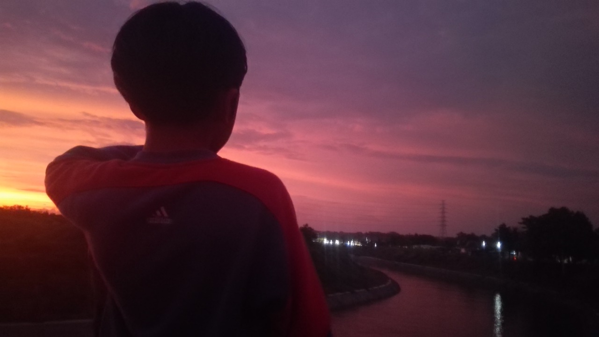

BackEnd & DevOps Junior.
Rekayasa Perangkat Lunak — SMK Negeri 2 Surakarta
Siswa SMK Negeri 2 Surakarta dengan fokus mendalam pada arsitektur BackEnd dan DevOps engineering. Mengembangkan dan mengelola personal home server, kontainerisasi Docker, automasi pipeline, perancangan RESTful API berkinerja tinggi, serta riset implementasi Python dan JavaScript secara berkesinambungan.

Jason C. Hukom
@jasonhukom • surakarta.devPublic Repositories & Architecture Lab
Koleksi proyek terbuka yang dikembangkan secara mandiri, mencakup ekosistem automation skrip, personal homelab, dan utilitas perangkat lunak.
JasonLab open_in_new
My Personal Lab. Eksperimen backend komputasi, automasi skrip, testing environment, dan riset pipeline personal secara konsisten.
Jason_Personal_Server open_in_new
My Home Server. Konfigurasi self-hosted server, service orchestration, monitoring, manajemen storage, dan otomasi infrastruktur.
Bible-Plan open_in_new
For myself, reading the Bible everyday. Aplikasi web penjadwalan dan tracking progress bacaan terstruktur harian dengan state persistence.
PastCraft-Coordinates open_in_new
Aplikasi kalkulasi dan manajemen titik koordinat untuk server sandbox gaming & navigasi terdesentralisasi.
RESTful API Ecosystem open_in_new
Arsitektur backend modular untuk integrasi layanan autentikasi JWT, relasi database PostgreSQL, dan rate-limiting proteksi endpoint.
Automated Deployment Flow open_in_new
Pipeline GitHub Actions dengan tahap automated linting, container build, automated testing, dan deploy kontinu ke homelab cluster.
Tech Stack & Kapabilitas Teknis
Pengembangan arsitektur backend andal dan orkestrasi infrastruktur berbasis standar industri modern.
Backend Development
Pembangunan logika server terstruktur, manajemen database relasional, serta perancangan API endpoint yang aman dan konsisten.
DevOps & Infrastructure
Pengelolaan physical server dan VM, containerization microservices, orkestrasi pipeline, dan automasi deployment.
Tools & Environment
Keahlian praktis menggunakan tooling diagnostik jaringan, API inspector, version control, dan konfigurasi DNS/CDN.
Socials & Media Kanal
Ikuti perjalanan rekayasa sistem, konten teknis, dan dokumentasi homelab Jason Christopher Hukom di berbagai platform digital.
YouTube
@jason_hukomTech demos, konfigurasi homelab server, dan update proyek rekayasa.
TikTok
@jason_hukomCoding journey, daily dev routine, dan student life SMK IT.
Visual portfolio, dokumentasi kegiatan, dan personal updates.
GitHub
@jasonhukom25 public repositories, open source, dan script automasi.
Codedex
@jasonhukomGamified interactive coding journey & technical achievements.
X (Twitter)
@jason_hukomPemikiran ringkas seputar infrastruktur, server, dan software.
Threads
@jason_hukomDiskusi santai dan refleksi seputar engineering & lab work.
Website Resmi
jasonhukom.my.idDomain utama untuk direct routing & live production showcase.
Mulai Kolaborasi
Terbuka untuk kolaborasi proyek arsitektur backend, setup personal server/homelab, diskusi kurikulum IT SMK, ataupun peluang magang industri.
SMK Negeri 2 Surakarta
Jawa Tengah, Indonesia
contact@jasonhukom.my.id
Response rate: < 24 jam
Jason_Personal_Server: ACTIVE


Socials & Media Channels
Follow Jason Christopher Hukom's software engineering journey, homelab build logs, and open-source updates across digital platforms.
YouTube
@jason_c_hukomTech walkthroughs, homelab server configurations, and engineering project showcases.
TikTok
@jason_c_hukomCoding journey snippets, developer daily routines, and vocational student life.
Instagram
@jason_c_hukomVisual snapshots, event milestones, tech setups, and personal portfolio highlights.
X (Twitter)
@jason_c_hukomEngineering thoughts, DevOps updates, homelab discoveries, and industry observations.
GitHub
@jasonhukom25 public repositories, open-source automation scripts, and server infrastructure repos.
Codédex
@jasonhukomGamified interactive code learning roadmap, certifications, and developer rank progress.
Threads
@jason_hukomCasual technical thoughts, reflections, and informal engineering commentary.